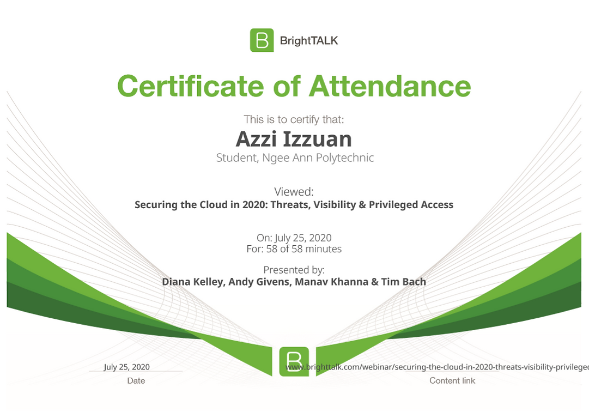
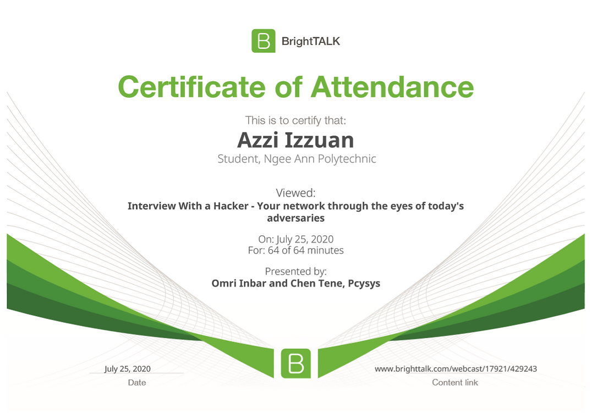

Service-Learning experience
The iFrame below is the overall product or video that our team produced for the students of ASPN delta seniors with special needs. This website and video are produced to teach these students how to code using scratch, our team decides to layout the basic fundamental of scratch programming as other teams have gone in dept such as creating games. During the process, I have learned a lot such as video editing, keyframing and also subtitle creating, and I enjoy the process of creating a product or tutorial for others to learn as it give me the feeling of satisfying giving back to the community.
Technologies:
- - Scratch
- - Wix
Industry Engagement experience
Below is the certificate of attendance that I attend the webinar, For the first webinar I have learned a lot of things regarding cloud security. Cloud security is important without it your cloud server can be at risk of getting attacked, hackers or public getting your information. The first webinar also taught me on how do i configure security on clouds,what do i do before deploying an application and how do i monitor cloud to prevent any security penetration.
Read More
The second webinar is all about how to protect your organization or personal network, by using a hacker perspective this webinar teaches you how to configure network security or organization security network. The webinar goes through on how a hacker accomplishes its goal by showing how they hack into an organization network and also showing the vulnerability that you might make when configuring organization security. I have learned a lot from the second webinar, on how to configure the security network, and using also the steps and advice are given from the speakers helps me a lot in the future if were to pursue this line in the future.
Read More